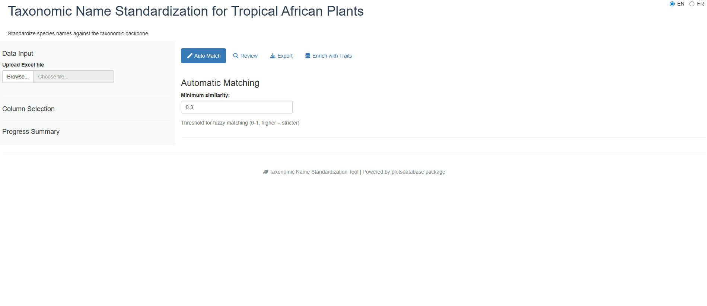
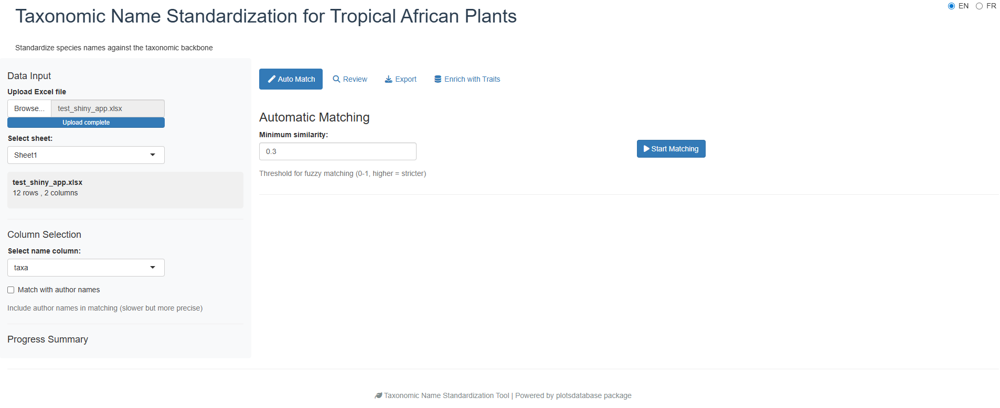
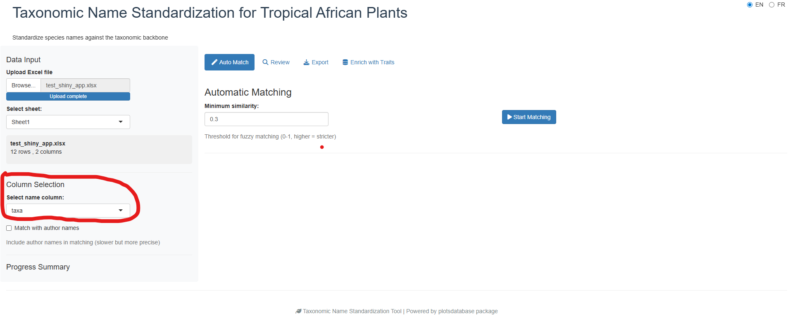
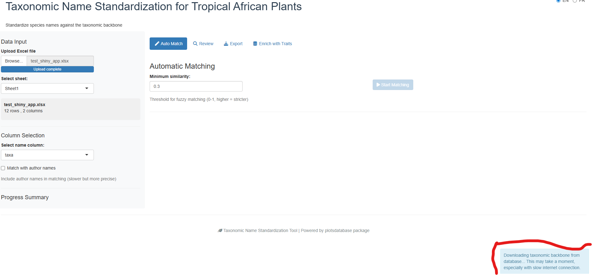
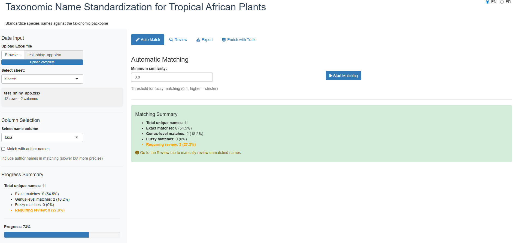
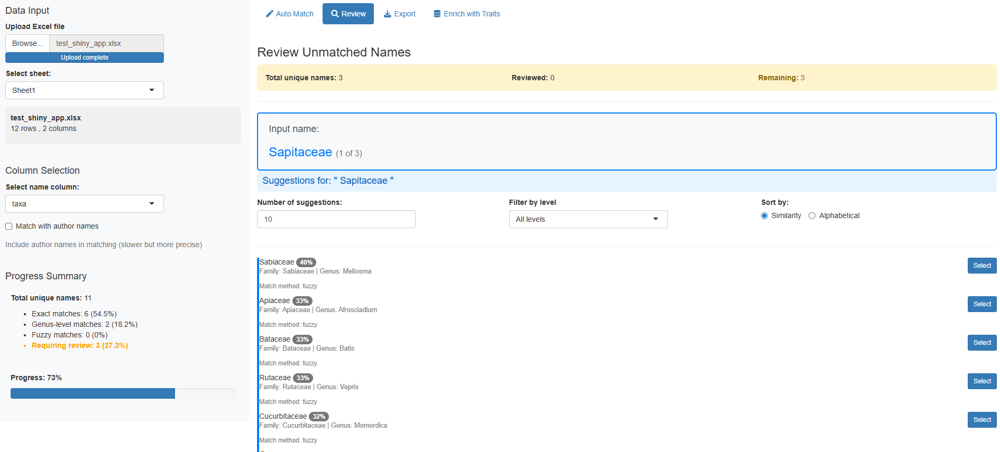
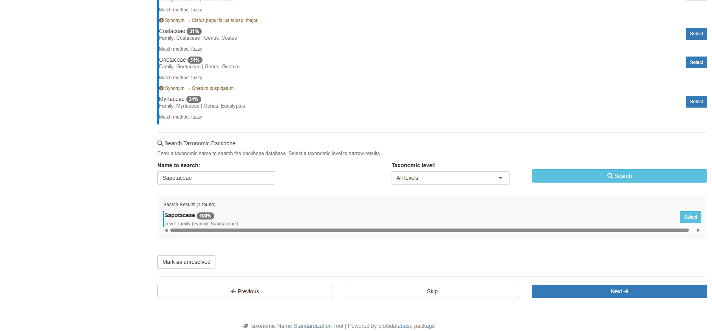
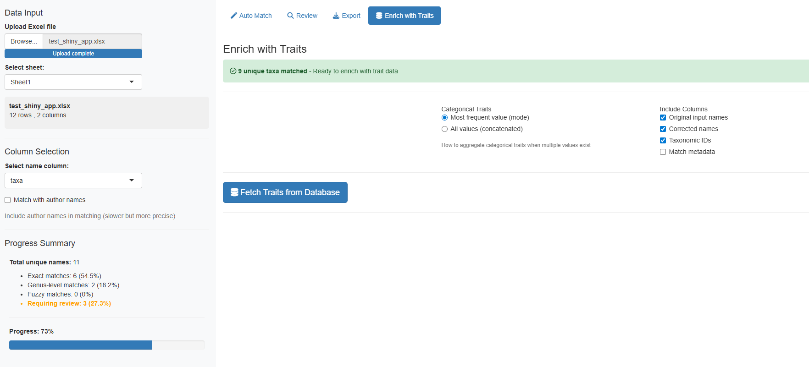
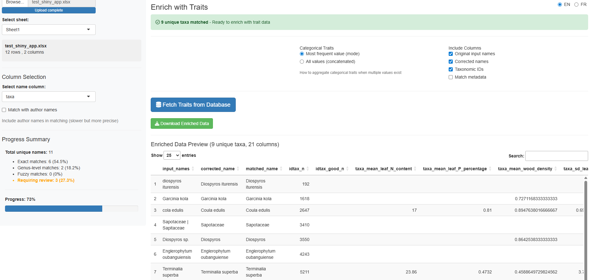

Using the Taxonomic Name Standardization App
taxonomic-app.RmdIntroduction
The launch_taxonomic_match_app() function provides an
interactive Shiny application for standardizing taxonomic names against
the Central African plant taxonomic backbone database. This visual
interface is ideal for:
- Exploring and cleaning taxonomic data interactively
- Understanding match quality through visual feedback
- Manually reviewing uncertain matches
Prerequisites
Before launching the app, ensure you have:
-
Database credentials configured (see
setup_db_credentials()) -
Data to standardize in one of these formats:
- Excel file (.xlsx)
- A column containing taxonomic names For example : (genus + species) or (genus) or (family)
Quick Start
Launch the app with a single command:
Alternatively, pre-load your data:
# With R data.frame
my_data <- read.csv("tree_inventory.csv")
launch_taxonomic_match_app(data = my_data, name_column = "species_name")
# Adjust fuzzy matching sensitivity
launch_taxonomic_match_app(min_similarity = 0.7) # More strict matchingStep-by-Step Walkthrough
Phase 1: Initial View
When you first launch the app, you’ll see the main interface with a sidebar for configuration and tabs for different workflow phases:

The app uses a tabbed workflow that guides you through each phase sequentially.
Phase 2: Upload Your Data
The first step is to provide your data. You can either:
- Upload an Excel file using the file browser
-
Use pre-loaded R data (if you passed
dataparameter)

The app will display a preview of your uploaded data so you can verify it was read correctly.
Phase 3: Select Name Column
Once data is loaded, select which column contains the taxonomic names to standardize:

The dropdown menu shows all available columns from your dataset. Choose the one containing species names (typically formatted as “Genus species” or “Genus species Author”).
Phase 4: Automatic Matching
Click the “Start Matching” button to begin the automatic matching process. The app uses a three-tier matching strategy:
- Exact match: Direct lookup of full name
- Genus-constrained fuzzy match: Searches within matched genera
- Full database fuzzy match: Searches entire backbone (last resort)

The progress bar shows real-time status. For large datasets, this may take a few minutes.
Phase 5: Review Match Results
After matching completes, you’ll see a summary table showing all names with their match status:

The results table includes:
- Original name: Your input name
- matched_name: Name found in backbone
- match_method: How it was matched (exact, genus_constrained, fuzzy, manual)
- match_score: Similarity score (0-1, higher is better)
- idtax_n: Taxon ID in database
- is_synonym: Whether matched name is a synonym
- accepted_name: Current accepted name (if synonym)
Match quality indicators:
- Exact match (1.0): Perfect match, no review needed
- High similarity (>0.8): Very likely correct, quick review recommended
- Medium similarity (0.5-0.8): Possible match, review suggested
- Low similarity (<0.5): Uncertain, manual review required
- No match: Requires manual selection
Phase 6: Manual Review
For unmatched or uncertain names, switch to the “Review” tab to manually review and select matches:

The review interface shows:
- Current unmatched name at the top
- Fuzzy match suggestions ranked by similarity
- Taxonomic information for each suggestion (family, genus, species)
- Similarity scores to help assess match quality
You can:
- Accept a suggestion: Click the name to select it
- Skip: Move to next name without selecting
- Search manually: Type to search the backbone database

The app remembers your selections and automatically updates the results table.
Phase 7: Enrich Data with Traits
Additionally, you can enrich your matched data with taxonomic traits from the backbone database:

Select which traits to add to your dataset, such as:
- Growth form
- Wood density
- Leaf traits
- Ecological characteristics
The enriched data combines your original data with taxonomic information and selected traits:

Phase 8: Export Results
Once you’re satisfied with the matches, export your standardized dataset:

Available export formats:
- Excel (.xlsx): Best for sharing with collaborators
- CSV (.csv): Universal tabular format
- RDS (.rds): R-native format preserving data types
The exported file includes:
- All your original columns
- New columns with taxonomic information (
idtax_n,matched_name,match_method, etc.) - Enriched trait data (if selected)
Understanding Output Columns
The app adds these columns to your data:
| Column | Description |
|---|---|
idtax_n |
Matched taxon ID in backbone database |
idtax_good_n |
Accepted taxon ID (for synonyms) |
matched_name |
Name found in backbone |
corrected_name |
Final standardized name |
match_method |
Matching strategy used (exact, genus_constrained, fuzzy, manual) |
match_score |
Similarity score (0-1) |
is_synonym |
TRUE if matched name is a synonym |
accepted_name |
Current accepted name (if synonym) |
family |
Taxonomic family |
genus |
Taxonomic genus |
Advanced Options
Adjusting Fuzzy Matching
Control matching sensitivity with the min_similarity
parameter:
# Very strict - only high-quality matches
launch_taxonomic_match_app(min_similarity = 0.8)
# More permissive - allows lower-quality matches
launch_taxonomic_match_app(min_similarity = 0.3) # DefaultLower values cast a wider net but may include false positives. Higher values are more conservative but may miss valid matches.
Increasing Suggestions
Show more fuzzy match suggestions per name:
# Show top 20 suggestions instead of default 10
launch_taxonomic_match_app(max_suggestions = 20)Useful when initial suggestions don’t include the correct match.
Troubleshooting
Connection Issues
Problem: “Failed to connect to database”
Solution:
# Check connection
db_diagnostic()
# Reset credentials if needed
remove_db_credentials()
setup_db_credentials()No Fuzzy Matches Found
Problem: No suggestions appear for unmatched names
Possible causes: - min_similarity
threshold too high - Taxonomic names contain typos or non-standard
formatting - Names not present in the taxonomic backbone
Solutions: - Lower min_similarity:
launch_taxonomic_match_app(min_similarity = 0.2) - Clean
input names (remove extra spaces, fix obvious typos) - Verify names are
African taxa
Slow Matching Performance
Problem: Matching takes very long for large datasets
Solutions: - Use batch processing instead:
match_taxonomic_names() for programmatic workflow - Process
data in chunks (split large datasets) - Increase database connection
pool size (advanced)
When to Use the App vs. Programmatic Approach
Use the Shiny App when:
- Exploring data interactively
- You prefer visual interfaces
- Dataset is small to medium size (<5,000 rows)
- Need to manually review uncertain matches
- Learning the matching process
Use match_taxonomic_names() when:
- Processing large datasets (>5,000 rows)
- Automating workflows in scripts
- Integrating with data pipelines
- Reproducibility is critical (NEVER REMOVE THE COLUMN THAT CONTAIN THE ORIGINAL NAME)
- Batch processing multiple files
Example programmatic approach:
# Load data
my_data <- read.csv("tree_inventory.csv")
# Match names
matched <- match_taxonomic_names(
names = my_data$species_name,
min_similarity = 0.5
)
# Merge back with original data
result <- cbind(my_data, matched)
# Export
write.csv(result, "standardized_inventory.csv", row.names = FALSE)See Also
-
match_taxonomic_names(): Underlying matching function for programmatic use -
query_taxa(): Query taxonomic backbone directly -
match_tax(): Simple taxonomic lookup function -
vignette("using-query-plots"): Guide to querying plot data
Tips for Best Results
- Clean your data first: Remove obvious typos, extra whitespace, and special characters
- Understand your data: Know which taxonomic groups are in your dataset
- Review match scores: Don’t blindly accept low-similarity matches (<0.6)
- Save incrementally: Export intermediate results to avoid losing manual review work
-
Document parameters: Note which
min_similarityvalue you used for reproducibility
Example Workflow
Here’s a complete workflow from start to finish:
# 1. Load your data
trees <- read.csv("forest_inventory.csv")
# Columns: plot_id, tree_number, species_name, dbh, height
# 2. Launch app with data
launch_taxonomic_match_app(
data = trees,
name_column = "species_name",
min_similarity = 0.5
)
# 3. In the app:
# - Review automatic matches
# - Manually resolve unmatched names
# - Optionally enrich with traits (e.g., wood density)
# - Export as "forest_inventory_standardized.xlsx"
# 4. Continue analysis with standardized data
standardized <- readxl::read_excel("forest_inventory_standardized.xlsx")
# Now you have clean taxonomic IDs for further analysis!This workflow ensures your taxonomic data is standardized and ready for downstream analyses like diversity metrics, trait-based analyses, or database integration.